Chapter VI · A fire for VAVE

This fire was lit for this room.
vave.log: a tool built for VAVE, a draft in testing, not in daily use.
How it started
A draft, on purpose
A discovery project: a survey as one HTML file and a clickable prototype. Then vave.log, built on assumptions and public research, as a phase-one draft to be tested with real people.
Every feature in here is a hypothesis until you've used it.
How it grew · from the repository's history

105
commits
#91
pull requests, so far
How it grew · the first days
| Day 1 | An empty repo becomes a working app with login and the MCP foundation. |
| Day 2 | About 30 pull requests. |
| Day 3 | Invoices, quotes that turn into projects, checks against WCAG 2.2 AA. |
How it grew · the weeks after
| Week 2 | Eight milestones around leave and capacity. |
| Weeks 5–6 | An audit with about 60 findings, and the capacity plan rebuilt after watching one real user work. |
| Week 6 | Group of companies, holidays for China, Dubai and Singapore, polish. |
What the draft can do
- Time
- timer, approvals, flextime
- Leave
- team calendar, holidays for six countries
- Capacity
- heatmap, scenarios, an Excel-style plan
- Projects
- and finance: quotes, invoices with e-invoice and DATEV export
- Rights
- seven rights templates
- Languages
- English · Deutsch · 中文
How it's built · one picture
An app with a plug for AI
- Web appwhat you click
- Databasewith login. Everybody only sees what they may see.
- AI plug68 tools
- Assistantwith exactly the rights of the person asking
About 70 test files. Every change passes checks, including a dependency vulnerability check, before it goes live.
Watch one real person.
The best feature came from watching one real person use it for an hour. Not from a prompt.
Where it could go · proposals, not decisions
Now
- AI time entry with a proper consent screen
- Capacity plan v2: rates per service, € per phase
Next
- Build-up radar: crews, trucks, hall slots
- Fair deadline radar from the technical guidelines
- Modular stock: frames, LED tiles, furniture
- Site reports from the phone
- Client approvals for render variants
Later
- Cross-company staffing
- Multi-currency invoices, only with tax advice